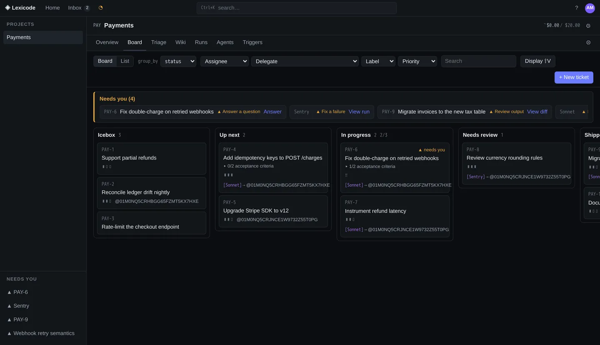
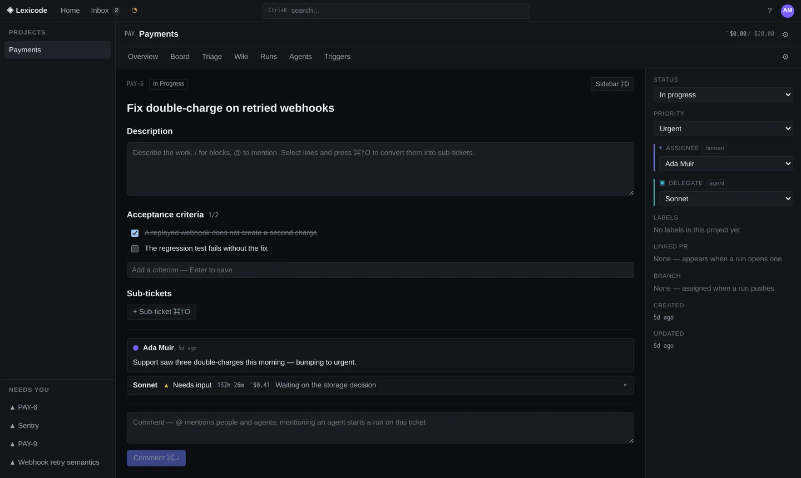
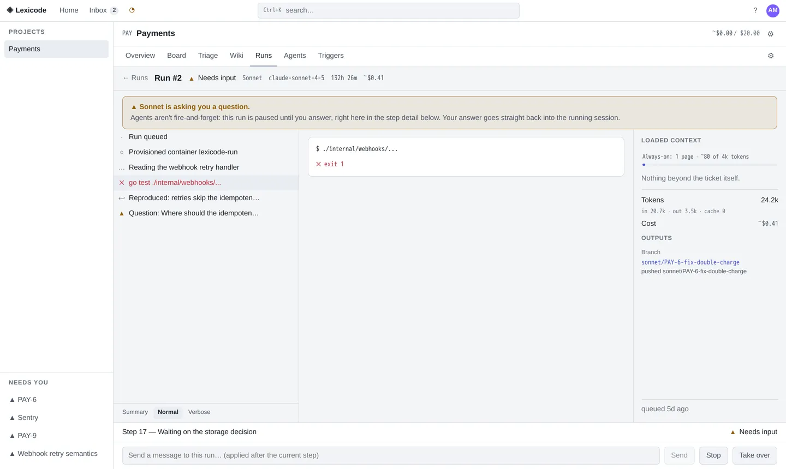
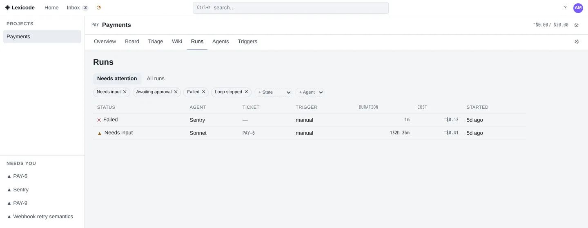
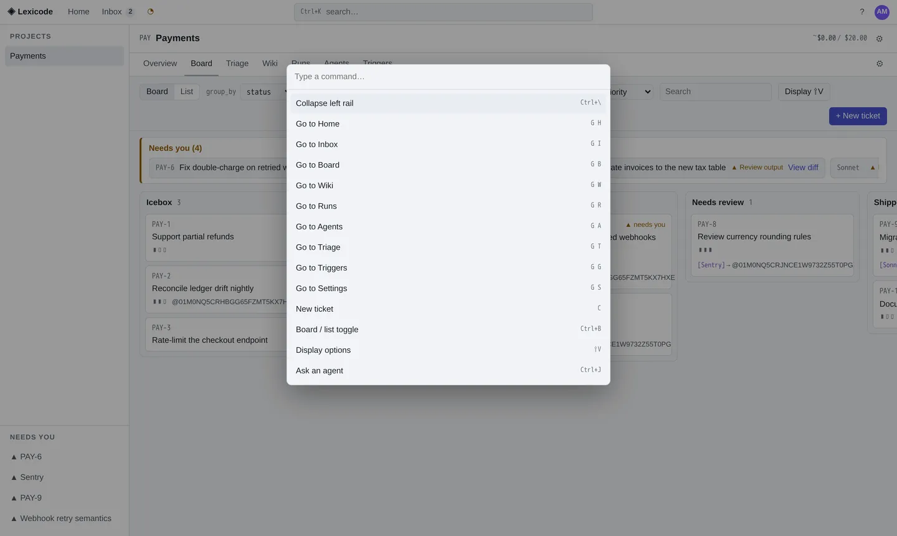
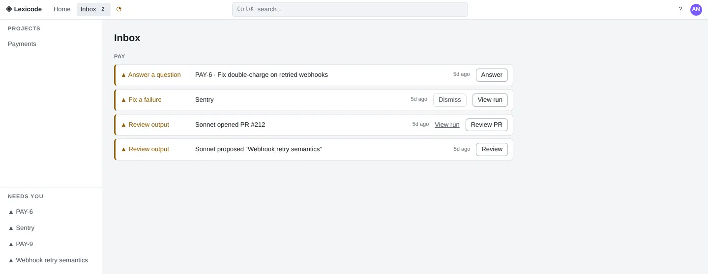
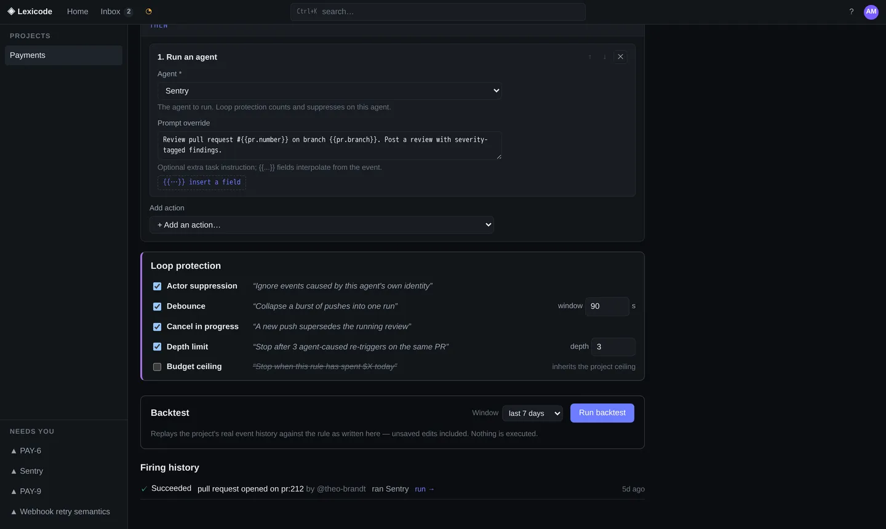
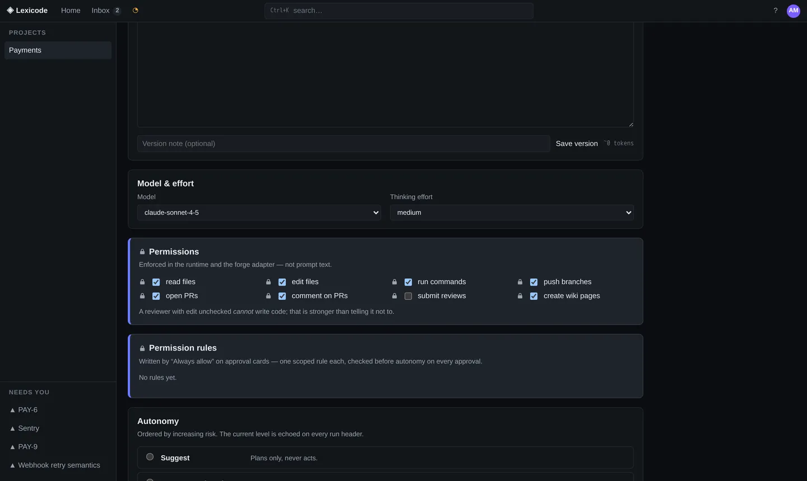
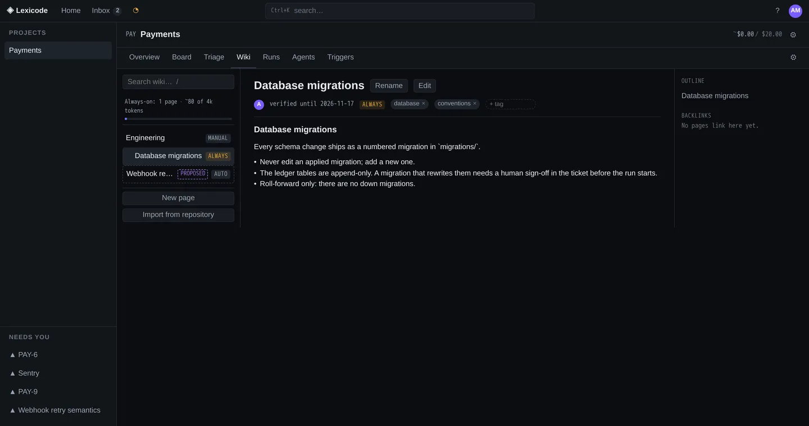
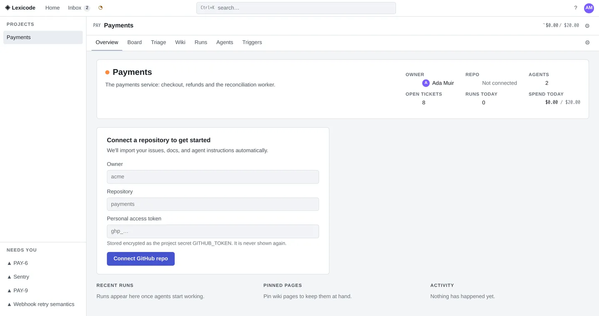

Premise
The scarce resource is not agent capability. It is human attention. Every decision in this product is downstream of that one sentence.
An agent that works unwatched is not a productivity gain; it is a review backlog with extra steps. So Lexicode spends its complexity on the seams a person actually touches: what is waiting on you and why, what an agent read before it acted, what it is permitted to do at all, and where an automatic chain stopped itself. You run it on your own box, point it at a GitHub repository, write tickets and a roster of agents, and wire the output of one agent into the input of the next.
A ticket can travel from written to reviewed pull request waiting for you without anyone touching a keyboard — and every step stays visible and interruptible.
The dashboard, the orchestrator, the GitHub poller, the trigger engine, the MCP server and the loop guard are one process and one SQLite file.
Not a permission that is switched off. The forge port has no merge method, and
review submission rejects APPROVE unconditionally.
Dragging a card does not start a run. Delegating does, and delegating is a keystroke you press on purpose.
Board & ticket
Columns you name · categories automations key off
Rename any column you like. Each one carries a fixed category underneath, and every automation keys off the category — never the name, so renaming “Up next” to “Ready” breaks nothing. Above the columns sits the strip that matters: the work that has stopped and is waiting on a person.
{kind=link}

{kind=link}

The run
A container you can interrupt
A run is a real Docker container with a read-only rootfs, a non-root user, per-run credentials and a network policy. While it works you get a provisioning checklist instead of a spinner, then a live activity stream at three verbosity levels. When the agent reaches a fork it cannot decide, it parks and asks — and the run stays parked until you answer, right in the step detail. A failed run still leaves an artifact.
{kind=link}

{kind=link}

{kind=link}

Needs you
Four reasons — never one “waiting” badge
A run that has stopped has stopped for a reason, and the reason changes what you do next. Lexicode names four of them and never collapses them into a single status: answer a question, approve a step, fix a failure, review output. Each arrives as its own row with its own action attached, so triage is reading rather than clicking through to find out.
{kind=link}

Triggers
WHEN / IF / THEN · rehearsed before it is armed
Triggers are what turn six separate agents into one chain: a pull request opens, a review is requested, CI fails, the fix goes back round. The editor is generated from the event schema, so the fields on screen are the fields that exist. Loop protection is attached to the rule itself — five layers, on by default — and the backtest replays your project's real event history against the rule as currently written, unsaved edits included. Nothing is executed.
{kind=link}

An agent's own events never re-trigger it.
A burst of pushes collapses into one run.
A new push supersedes the review already running.
Agent-caused re-triggers on the same object are counted and capped.
A rule can inherit the project's daily spend ceiling, or carry its own.
Enforcement
Guidance is a prompt · enforcement is not
An agent's directive is guidance: it goes in the prompt, it is versioned append-only, and the editor shows what it costs in tokens. Its permissions and network policy are something else entirely — they are checked in the runtime and in the forge adapter, and no wording in a prompt can talk its way past them. A reviewer with “edit files” unchecked cannot write code. That is stronger than telling it not to.
{kind=link}

Wiki context
Standing orders with a budget you can see
The wiki is not documentation that happens to be nearby; it is the set of standing instructions agents read. Pages are scoped — always-on, automatic, manual — owned, and able to expire, and the tree shows the always-on budget in tokens before a single run starts. Agents may propose pages; proposals arrive marked as proposals and wait for a person. Each run then shows exactly which pages loaded, why each one loaded, and what it cost.
{kind=link}

Measurements
From scripts/s39-acceptance.sh
The acceptance script drives the whole product — real binary, real Docker containers, real git over HTTP, the real MCP server, the real GitHub poller, the real trigger engine and the real loop guard — through the eight-step chain and prints these numbers. Last measured 2026-08-22 on an Apple Silicon laptop, Docker 29.7.2.
| Goal | Target | Measured | What was measured |
|---|---|---|---|
| Connect repo → first run in flight | < 5 min | 0.55 s | Connecting, writing the ticket and its criteria, delegating, admission, container create, clone, branch and launch. |
| Six-step chain configured | < 10 min | 2 ms | The four trigger-create calls, with the bodies the editor sends. |
| Whole eight-step chain | — | 42 s | Ticket → PR → review → address → CI failure → re-review → loop stopped at depth 3. Bounded below by the poller's 10-second floor. |
| Agent image build | — | 56 s | docker build --no-cache, once per machine per image change. |
Read these honestly. They measure the product's side of each goal, not a person's: the five-minute goal is about ceremony, and the product's share of it is sub-second — the rest is you typing. The agent in the acceptance run is a scripted stand-in. It does real work through real seams — it clones, commits and pushes over git, calls the real MCP server, submits reviews through the real forge adapter — but it does not think, so these are floor values for the orchestration rather than estimates of a real agent's work.
Operation
Three commands · no account, no tenant
# 1 — install (see docs/install.md for a real release host) $ make release && sh scripts/install.sh # 2 — check the machine: docker, ports, disk, credentials $ lexicode doctor # 3 — run it $ lexicode serve → http://127.0.0.1:7717
Create the owner account on the first screen, paste a claude setup-token
into Settings → Credentials, connect a repository, write a ticket, press D. Or
look around a populated workspace first — eleven tickets, two agents, three runs, a wiki
with an agent proposal, a trigger with history — without connecting anything:
$ lexicode serve --demo --data-dir ~/.lexicode-demo
{kind=link}
